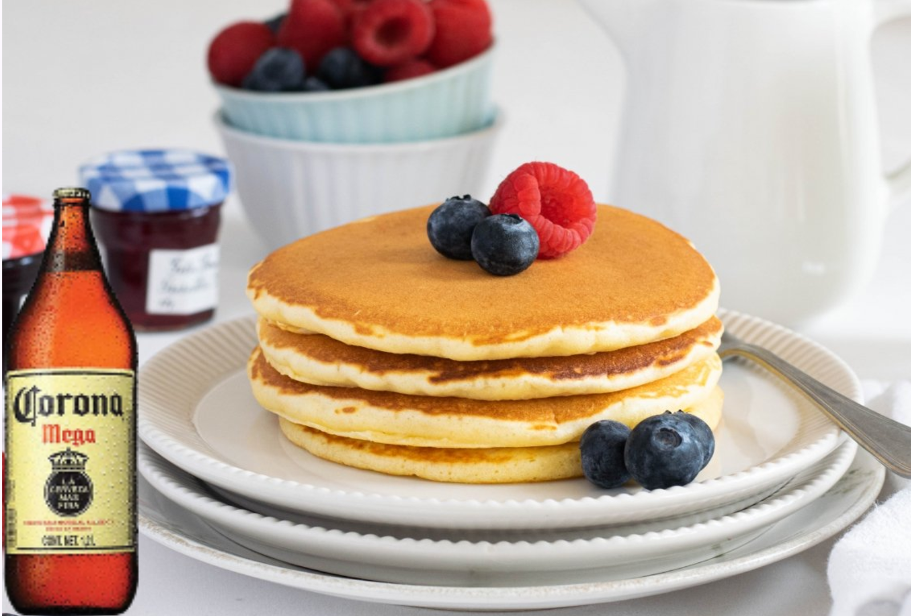

Receta de Hotcakes de la sensei

Checa nuestro blog
Ingredientes:
(5 porciones)
- 1 huevo
- 2 cucharadas de aceite
- 3/4 de taza de leche
- 1 cucharada de azúcar
- 1 pizca de sal
- 1 taza de harina
- 1 cucharadita de polvo para hornear
- 1 caguama opcional
Procedimiento:
- Vacía todos los ingredientes en un recipiente.
- Revuelve hasta obtener una mezcla homogénea.
- Pon en un sartén una cucharadita de mantequilla.
- Pon 1/4 de taza de la mezcla en el sartén.
- Espera 5 minutos y voltéalo.
- Espera otros 5 minutos.
- Sírvelos con mantequilla y miel de maple.
- Darle un trago a la caguama